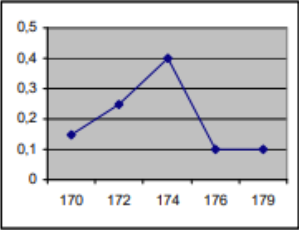
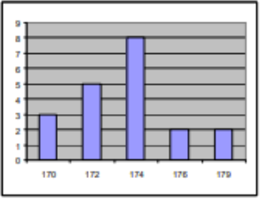
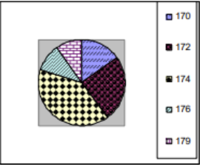

Štatistika
- Štatistika je vedná disciplína, ktorá sa zaoberá zhromažďovaním, analýzou, interpretáciou, prezentáciou a organizáciou dát
- Poskytuje nástroje na skúmanie vzorov, zistenie trendov a robí závery o populácii na základe vzorky
Štatistický súbor
- konečná neprázdna množina M objektov śtatistického pozorovania, ktoré majú isté spoločné vlastnosti
Štatistické jednotky
- prvky množiny štatistického súboru
počet všetkých štatistických jednotiek voláme rozsah súboru n
Štatistický znak
- spoločná vlastnosť prvkov štatistického súboru, ktorej premenlivosť je predmetom štatistického skúmania
- jednotlivé údaje znaku sa nazývajú hodnoty znaku, označujú sa x1, x2…xn
- kvantitatívne znaky - majú hodnoty vyjadrené číslicami
- kvalitatívne znaky - majú hodnoty vyjadrené slovným opisom
Absolútna početnosť hodnoty znaku x
- je to číslo, ktoré udáva, koľkokrát sa v súbore M vyskytuje hodnota xi
- označuje sa ni
Relatívna početnosť hodnoty znaku x
- je daná podielom
 kde ni je absolútna početnosť hodnoty znaku xi, n je rozsah súboru M, zvyčajne sa udáva v %
kde ni je absolútna početnosť hodnoty znaku xi, n je rozsah súboru M, zvyčajne sa udáva v %
Grafy
- absolútny

- relatívny

- histogram (stĺpcovy diagram)

- kruhový diagram

 Elektronická učebnica matematiky
Elektronická učebnica matematiky